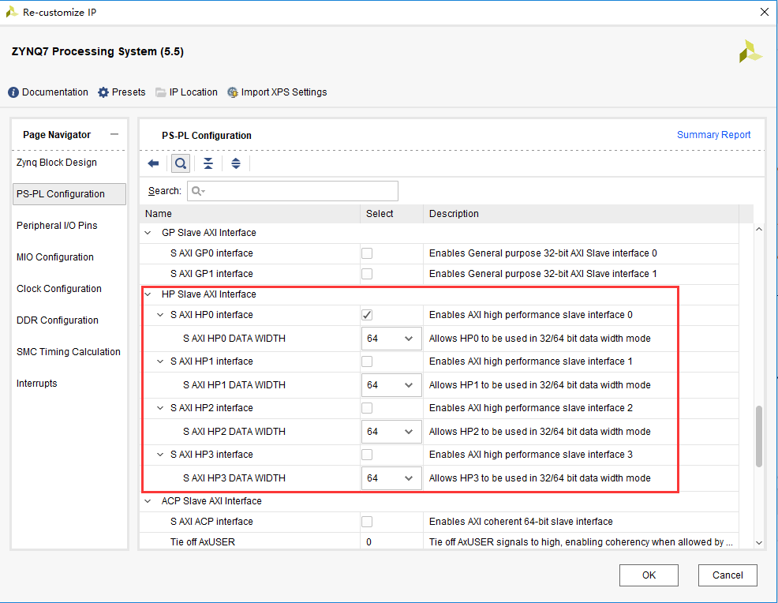
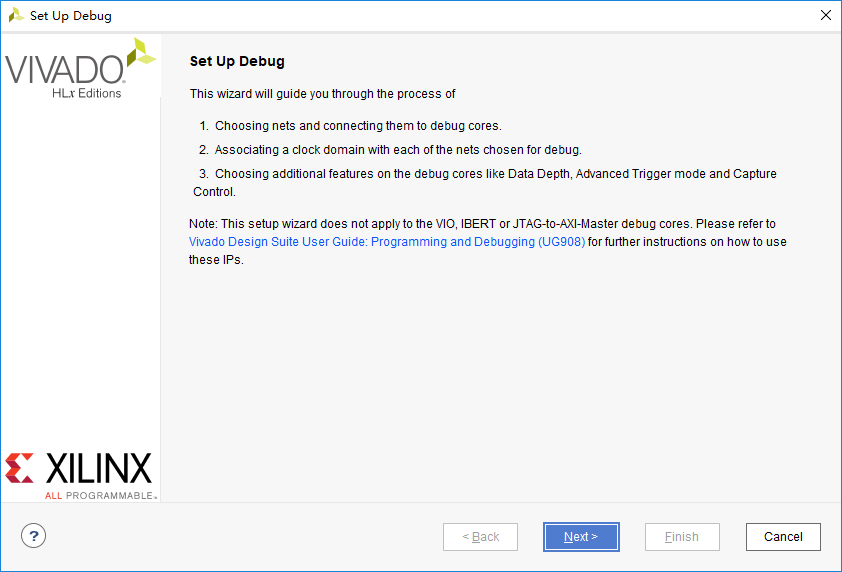

PL读写PS端DDR数据#
PL和PS的高效交互是zynq 7000 soc开发的重中之重，我们常常需要将PL端的大量数据实时送到PS端处理，或者将PS端处理结果实时送到PL端处理，常规我们会想到使用DMA的方式来进行，但是各种协议非常麻烦，灵活性也比较差，本节课程讲解如何直接通过AXI总线来读写PS端ddr的数据，这里面涉及到AXI4协议，vivado的FPGA调试等。
ZYNQ的HP端口使用#
zynq 7000 SOC的HP口是 High-Performance Ports的缩写，如下图所示，一共有4个HP口，HP口是AXI Slave设备，我们可以通过这4个HP接口实现高带宽的数据交互。

在vivado的界面中HP的配置如下图(HP0~HP3)，这里面有使能控制，数据位宽选择，可选择32或64bit的位宽。
我们的实验启用HP0配置为64bit位宽，使用的时钟是150Mhz，HP的带宽是150Mhz * 64bit，对于视频处理，ADC数据采集等应用都有足够的带宽。如下图所示，配置完HP端口以后，zynq会多出一个AXI Slave端口，名称为S_AXI_HP0，不过这些端口都是AXI3标准的，我们常用的是AXI4协议，这里添加1个AXI Interconnect IP，用于协议转换（AXI3<->AXI4）。
PL端AXI Master#
AXI4相对复杂，但SOC开发者必须掌握，对于zynq的开发者，笔者建议能够在一些已有的模板代码基础上修改。AXI协议的具体内容可参考Xilinx UG761 AXI Reference Guide。在这里我们简单了解一下。
AXI4所采用的是一种READY，VALID握手通信机制，即主从模块进行数据通信前，先根据操作对各所用到的数据、地址通道进行握手。主要操作包括传输发送者A等到传输接受者B的READY信号后，A将数据与VALID信号同时发送给B，这是一种典型的握手机制。

AXI总线分为五个通道：
读地址通道，包含ARVALID, ARADDR, ARREADY信号；
写地址通道，包含AWVALID，AWADDR, AWREADY信号；
读数据通道，包含RVALID, RDATA, RREADY, RRESP信号；
写数据通道，包含WVALID, WDATA，WSTRB, WREADY信号；
写应答通道，包含BVALID, BRESP, BREADY信号；
系统通道，包含：ACLK，ARESETN信号；
其中ACLK为axi总线时钟，ARESETN是axi总线复位信号，低电平有效；读写数据与读写地址类信号宽度都为32bit；READY与VALID是对应的通道握手信号；WSTRB信号为1的bit对应WDATA有效数据字节，WSTRB宽度是32bit/8=4bit；BRESP与RRESP分别为写回应信号，读回应信号，宽度都为2bit，‘h0代表成功，其他为错误。
读操作顺序为主与从进行读地址通道握手并传输地址内容，然后在读数据通道握手并传输所读内容以及读取操作的回应，时钟上升沿有效。如图所示：
写操作顺序为主与从进行写地址通道握手并传输地址内容，然后在写数据通道握手并传输所读内容，最后再写回应通道握手，并传输写回应数据，时钟上升沿有效。如图所示：
在我们不擅长写FPGA的一些代码时我们往往要借鉴别人的代码或者使用IP core。在这里笔者从github上找到一个AXI master的代码，地址是https://github.com/aquaxis/IPCORE/tree/master/aq_axi_vdma。这个工程是一个自己写的VDMA，里面包含了大量可参考的代码。笔者这里主要使用了aq_axi_master.v这个代码用于AXI master读写操作。借鉴别人代码有时会节省很多时间，但如果不能理解的去借鉴，出现问题了很难解决。aq_axi_master.v代码如下，有部分修改。
/*
* Copyright (C)2014-2015 AQUAXIS TECHNOLOGY.
* Don't remove this header.
* When you use this source, there is a need to inherit this header.
*
* License
* For no commercial -
* License: The Open Software License 3.0
* License URI: http://www.opensource.org/licenses/OSL-3.0
*
* For commmercial -
* License: AQUAXIS License 1.0
* License URI: http://www.aquaxis.com/licenses
*
* For further information please contact.
* URI: http://www.aquaxis.com/
* E-Mail: info(at)aquaxis.com
*/
//////////////////////////////////////////////////////////////////////////////////
// Company: ALINX黑金
// Engineer: 老梅
//
// Create Date: 2016/11/17 10:27:06
// Design Name:
// Module Name: mem_test
// Project Name:
// Target Devices:
// Tool Versions:
// Description:
//
// Dependencies:
//
// Revision:
// Revision 0.01 - File Created
// Additional Comments:
//
//////////////////////////////////////////////////////////////////////////////////
module aq_axi_master(
// Reset, Clock
input ARESETN,
input ACLK,
// Master Write Address
output[0:0] M_AXI_AWID,
output[31:0] M_AXI_AWADDR,
output[7:0] M_AXI_AWLEN,// Burst Length: 0-255
output[2:0] M_AXI_AWSIZE,// Burst Size: Fixed 2'b011
output[1:0] M_AXI_AWBURST,// Burst Type: Fixed 2'b01(Incremental Burst)
output M_AXI_AWLOCK,// Lock: Fixed 2'b00
output[3:0] M_AXI_AWCACHE,// Cache: Fiex 2'b0011
output[2:0] M_AXI_AWPROT,// Protect: Fixed 2'b000
output[3:0] M_AXI_AWQOS,// QoS: Fixed 2'b0000
output[0:0] M_AXI_AWUSER,// User: Fixed 32'd0
output M_AXI_AWVALID,
input M_AXI_AWREADY,
// Master Write Data
output[63:0] M_AXI_WDATA,
output[7:0] M_AXI_WSTRB,
output M_AXI_WLAST,
output[0:0] M_AXI_WUSER,
output M_AXI_WVALID,
input M_AXI_WREADY,
// Master Write Response
input[0:0] M_AXI_BID,
input[1:0] M_AXI_BRESP,
input[0:0] M_AXI_BUSER,
input M_AXI_BVALID,
output M_AXI_BREADY,
// Master Read Address
output[0:0] M_AXI_ARID,
output[31:0] M_AXI_ARADDR,
output[7:0] M_AXI_ARLEN,
output[2:0] M_AXI_ARSIZE,
output[1:0] M_AXI_ARBURST,
output[1:0] M_AXI_ARLOCK,
output[3:0] M_AXI_ARCACHE,
output[2:0] M_AXI_ARPROT,
output[3:0] M_AXI_ARQOS,
output[0:0] M_AXI_ARUSER,
output M_AXI_ARVALID,
input M_AXI_ARREADY,
// Master Read Data
input[0:0] M_AXI_RID,
input[63:0] M_AXI_RDATA,
input[1:0] M_AXI_RRESP,
input M_AXI_RLAST,
input[0:0] M_AXI_RUSER,
input M_AXI_RVALID,
output M_AXI_RREADY,
// Local Bus
input MASTER_RST,
input WR_START,
input[31:0] WR_ADRS,
input[31:0] WR_LEN,
output WR_READY,
output WR_FIFO_RE,
input WR_FIFO_EMPTY,
input WR_FIFO_AEMPTY,
input[63:0] WR_FIFO_DATA,
output WR_DONE,
input RD_START,
input[31:0] RD_ADRS,
input[31:0] RD_LEN,
output RD_READY,
output RD_FIFO_WE,
input RD_FIFO_FULL,
input RD_FIFO_AFULL,
output[63:0] RD_FIFO_DATA,
output RD_DONE,
output[31:0] DEBUG
);
localparam S_WR_IDLE =3'd0;
localparam S_WA_WAIT =3'd1;
localparam S_WA_START =3'd2;
localparam S_WD_WAIT =3'd3;
localparam S_WD_PROC =3'd4;
localparam S_WR_WAIT =3'd5;
localparam S_WR_DONE =3'd6;
reg[2:0] wr_state;
reg[31:0] reg_wr_adrs;
reg[31:0] reg_wr_len;
reg reg_awvalid, reg_wvalid, reg_w_last;
reg[7:0] reg_w_len;
reg[7:0] reg_w_stb;
reg[1:0] reg_wr_status;
reg[3:0] reg_w_count, reg_r_count;
reg[7:0] rd_chkdata, wr_chkdata;
reg[1:0] resp;
reg rd_first_data;
reg rd_fifo_enable;
reg[31:0] rd_fifo_cnt;
assign WR_DONE =(wr_state == S_WR_DONE);
assign WR_FIFO_RE = rd_first_data |(reg_wvalid &~WR_FIFO_EMPTY & M_AXI_WREADY & rd_fifo_enable);
//assign WR_FIFO_RE = reg_wvalid & ~WR_FIFO_EMPTY & M_AXI_WREADY;
always@(posedge ACLK ornegedge ARESETN)
begin
if(!ARESETN)
rd_fifo_cnt <=32'd0;
elseif(WR_FIFO_RE)
rd_fifo_cnt <= rd_fifo_cnt +32'd1;
elseif(wr_state == S_WR_IDLE)
rd_fifo_cnt <=32'd0;
end
always@(posedge ACLK ornegedge ARESETN)
begin
if(!ARESETN)
rd_fifo_enable <=1'b0;
elseif(wr_state == S_WR_IDLE && WR_START)
rd_fifo_enable <=1'b1;
elseif(WR_FIFO_RE &&(rd_fifo_cnt == RD_LEN[31:3]-32'd1))
rd_fifo_enable <=1'b0;
end
// Write State
always@(posedge ACLK ornegedge ARESETN)begin
if(!ARESETN)begin
wr_state <= S_WR_IDLE;
reg_wr_adrs[31:0]<=32'd0;
reg_wr_len[31:0]<=32'd0;
reg_awvalid <=1'b0;
reg_wvalid <=1'b0;
reg_w_last <=1'b0;
reg_w_len[7:0]<=8'd0;
reg_w_stb[7:0]<=8'd0;
reg_wr_status[1:0]<=2'd0;
reg_w_count[3:0]<=4'd0;
reg_r_count[3:0]<=4'd0;
wr_chkdata <=8'd0;
rd_chkdata <=8'd0;
resp <=2'd0;
rd_first_data <=1'b0;
endelsebegin
if(MASTER_RST)begin
wr_state <= S_WR_IDLE;
endelsebegin
case(wr_state)
S_WR_IDLE:begin
if(WR_START)begin
wr_state <= S_WA_WAIT;
reg_wr_adrs[31:0]<= WR_ADRS[31:0];
reg_wr_len[31:0]<= WR_LEN[31:0]-32'd1;
rd_first_data <=1'b1;
end
reg_awvalid <=1'b0;
reg_wvalid <=1'b0;
reg_w_last <=1'b0;
reg_w_len[7:0]<=8'd0;
reg_w_stb[7:0]<=8'd0;
reg_wr_status[1:0]<=2'd0;
end
S_WA_WAIT:begin
if(!WR_FIFO_AEMPTY |(reg_wr_len[31:11]==21'd0))begin
wr_state <= S_WA_START;
end
rd_first_data <=1'b0;
end
S_WA_START:begin
wr_state <= S_WD_WAIT;
reg_awvalid <=1'b1;
reg_wr_len[31:11]<= reg_wr_len[31:11]-21'd1;
if(reg_wr_len[31:11]!=21'd0)begin
reg_w_len[7:0]<=8'hFF;
reg_w_last <=1'b0;
reg_w_stb[7:0]<=8'hFF;
endelsebegin
reg_w_len[7:0]<= reg_wr_len[10:3];
reg_w_last <=1'b1;
reg_w_stb[7:0]<=8'hFF;
/*
case(reg_wr_len[2:0]) begin
case 3'd0: reg_w_stb[7:0] <= 8'b0000_0000;
case 3'd1: reg_w_stb[7:0] <= 8'b0000_0001;
case 3'd2: reg_w_stb[7:0] <= 8'b0000_0011;
case 3'd3: reg_w_stb[7:0] <= 8'b0000_0111;
case 3'd4: reg_w_stb[7:0] <= 8'b0000_1111;
case 3'd5: reg_w_stb[7:0] <= 8'b0001_1111;
case 3'd6: reg_w_stb[7:0] <= 8'b0011_1111;
case 3'd7: reg_w_stb[7:0] <= 8'b0111_1111;
default: reg_w_stb[7:0] <= 8'b1111_1111;
endcase
*/
end
end
S_WD_WAIT:begin
if(M_AXI_AWREADY)begin
wr_state <= S_WD_PROC;
reg_awvalid <=1'b0;
reg_wvalid <=1'b1;
end
end
S_WD_PROC:begin
if(M_AXI_WREADY &~WR_FIFO_EMPTY)begin
if(reg_w_len[7:0]==8'd0)begin
wr_state <= S_WR_WAIT;
reg_wvalid <=1'b0;
reg_w_stb[7:0]<=8'h00;
endelsebegin
reg_w_len[7:0]<= reg_w_len[7:0]-8'd1;
end
end
end
S_WR_WAIT:begin
if(M_AXI_BVALID)begin
reg_wr_status[1:0]<= reg_wr_status[1:0]| M_AXI_BRESP[1:0];
if(reg_w_last)begin
wr_state <= S_WR_DONE;
endelsebegin
wr_state <= S_WA_WAIT;
reg_wr_adrs[31:0]<= reg_wr_adrs[31:0]+32'd2048;
end
end
end
S_WR_DONE:begin
wr_state <= S_WR_IDLE;
end
default:begin
wr_state <= S_WR_IDLE;
end
endcase
/*
if(WR_FIFO_RE) begin
reg_w_count[3:0] <= reg_w_count[3:0] + 4'd1;
end
if(RD_FIFO_WE)begin
reg_r_count[3:0] <= reg_r_count[3:0] + 4'd1;
end
if(M_AXI_AWREADY & M_AXI_AWVALID) begin
wr_chkdata <= 8'hEE;
end else if(M_AXI_WSTRB[7] & M_AXI_WVALID) begin
wr_chkdata <= WR_FIFO_DATA[63:56];
end
if(M_AXI_AWREADY & M_AXI_AWVALID) begin
rd_chkdata <= 8'hDD;
end else if(M_AXI_WSTRB[7] & M_AXI_WREADY) begin
rd_chkdata <= WR_FIFO_DATA[63:56];
end
if(M_AXI_BVALID & M_AXI_BREADY) begin
resp <= M_AXI_BRESP;
end
*/
end
end
end
assign M_AXI_AWID =1'b0;
assign M_AXI_AWADDR[31:0]= reg_wr_adrs[31:0];
assign M_AXI_AWLEN[7:0]= reg_w_len[7:0];
assign M_AXI_AWSIZE[2:0]=2'b011;
assign M_AXI_AWBURST[1:0]=2'b01;
assign M_AXI_AWLOCK =1'b0;
assign M_AXI_AWCACHE[3:0]=4'b0011;
assign M_AXI_AWPROT[2:0]=3'b000;
assign M_AXI_AWQOS[3:0]=4'b0000;
assign M_AXI_AWUSER[0]=1'b1;
assign M_AXI_AWVALID = reg_awvalid;
assign M_AXI_WDATA[63:0]= WR_FIFO_DATA[63:0];
// assign M_AXI_WSTRB[7:0] = (reg_w_len[7:0] == 8'd0)?reg_w_stb[7:0]:8'hFF;
// assign M_AXI_WSTRB[7:0] = (wr_state == S_WD_PROC)?8'hFF:8'h00;
assign M_AXI_WSTRB[7:0]=(reg_wvalid &~WR_FIFO_EMPTY)?8'hFF:8'h00;
assign M_AXI_WLAST =(reg_w_len[7:0]==8'd0)?1'b1:1'b0;
assign M_AXI_WUSER =1;
assign M_AXI_WVALID = reg_wvalid &~WR_FIFO_EMPTY;
// assign M_AXI_WVALID = (wr_state == S_WD_PROC)?1'b1:1'b0;
assign M_AXI_BREADY = M_AXI_BVALID;
assign WR_READY =(wr_state == S_WR_IDLE)?1'b1:1'b0;
// assign WR_FIFO_RE = (wr_state == S_WD_PROC)?M_AXI_WREADY:1'b0;
localparam S_RD_IDLE =3'd0;
localparam S_RA_WAIT =3'd1;
localparam S_RA_START =3'd2;
localparam S_RD_WAIT =3'd3;
localparam S_RD_PROC =3'd4;
localparam S_RD_DONE =3'd5;
reg[2:0] rd_state;
reg[31:0] reg_rd_adrs;
reg[31:0] reg_rd_len;
reg reg_arvalid, reg_r_last;
reg[7:0] reg_r_len;
assign RD_DONE =(rd_state == S_RD_DONE);
// Read State
always@(posedge ACLK ornegedge ARESETN)begin
if(!ARESETN)begin
rd_state <= S_RD_IDLE;
reg_rd_adrs[31:0]<=32'd0;
reg_rd_len[31:0]<=32'd0;
reg_arvalid <=1'b0;
reg_r_len[7:0]<=8'd0;
endelsebegin
case(rd_state)
S_RD_IDLE:begin
if(RD_START)begin
rd_state <= S_RA_WAIT;
reg_rd_adrs[31:0]<= RD_ADRS[31:0];
reg_rd_len[31:0]<= RD_LEN[31:0]-32'd1;
end
reg_arvalid <=1'b0;
reg_r_len[7:0]<=8'd0;
end
S_RA_WAIT:begin
if(~RD_FIFO_AFULL)begin
rd_state <= S_RA_START;
end
end
S_RA_START:begin
rd_state <= S_RD_WAIT;
reg_arvalid <=1'b1;
reg_rd_len[31:11]<= reg_rd_len[31:11]-21'd1;
if(reg_rd_len[31:11]!=21'd0)begin
reg_r_last <=1'b0;
reg_r_len[7:0]<=8'd255;
endelsebegin
reg_r_last <=1'b1;
reg_r_len[7:0]<= reg_rd_len[10:3];
end
end
S_RD_WAIT:begin
if(M_AXI_ARREADY)begin
rd_state <= S_RD_PROC;
reg_arvalid <=1'b0;
end
end
S_RD_PROC:begin
if(M_AXI_RVALID)begin
if(M_AXI_RLAST)begin
if(reg_r_last)begin
rd_state <= S_RD_DONE;
endelsebegin
rd_state <= S_RA_WAIT;
reg_rd_adrs[31:0]<= reg_rd_adrs[31:0]+32'd2048;
end
endelsebegin
reg_r_len[7:0]<= reg_r_len[7:0]-8'd1;
end
end
end
S_RD_DONE:begin
rd_state <= S_RD_IDLE;
end
endcase
end
end
// Master Read Address
assign M_AXI_ARID =1'b0;
assign M_AXI_ARADDR[31:0]= reg_rd_adrs[31:0];
assign M_AXI_ARLEN[7:0]= reg_r_len[7:0];
assign M_AXI_ARSIZE[2:0]=3'b011;
assign M_AXI_ARBURST[1:0]=2'b01;
assign M_AXI_ARLOCK =1'b0;
assign M_AXI_ARCACHE[3:0]=4'b0011;
assign M_AXI_ARPROT[2:0]=3'b000;
assign M_AXI_ARQOS[3:0]=4'b0000;
assign M_AXI_ARUSER[0]=1'b1;
assign M_AXI_ARVALID = reg_arvalid;
assign M_AXI_RREADY = M_AXI_RVALID &~RD_FIFO_FULL;
assign RD_READY =(rd_state == S_RD_IDLE)?1'b1:1'b0;
assign RD_FIFO_WE = M_AXI_RVALID;
assign RD_FIFO_DATA[63:0]= M_AXI_RDATA[63:0];
assign DEBUG[31:0]={reg_wr_len[31:8],
1'd0, wr_state[2:0],1'd0, rd_state[2:0]};
endmodule
ddr读写数据的检验#
有了AXI Master读写接口以后比较编写了一个简单的验证模块，这个验证模块以前是用来验证ddr ip的，通过每8bit写入以后递增的数据，然后读取出来比较。这里要注意的是PS端DDR的起始地址和大小，还有地址的单位是byte还是word，AXI总线的地址单位是byte，测试模块的地址单位是word（这里的word不一定是4byte）。文件名mem_test.v，代码如下:
//////////////////////////////////////////////////////////////////////////////////
// Company: ALINX黑金
// Engineer: 老梅
//
// Create Date: 2016/11/17 10:27:06
// Design Name:
// Module Name: mem_test
// Project Name:
// Target Devices:
// Tool Versions:
// Description:
//
// Dependencies:
//
// Revision:
// Revision 0.01 - File Created
// Additional Comments:
//
//////////////////////////////////////////////////////////////////////////////////
module mem_test
#(
parameter MEM_DATA_BITS =64,
parameter ADDR_BITS =32
)
(
input rst,/*复位*/
input mem_clk,/*接口时钟*/
outputreg rd_burst_req,/*读请求*/
outputreg wr_burst_req,/*写请求*/
outputreg[9:0] rd_burst_len,/*读数据长度*/
outputreg[9:0] wr_burst_len,/*写数据长度*/
outputreg[ADDR_BITS -1:0] rd_burst_addr,/*读首地址*/
outputreg[ADDR_BITS -1:0] wr_burst_addr,/*写首地址*/
input rd_burst_data_valid,/*读出数据有效*/
input wr_burst_data_req,/*写数据信号*/
input[MEM_DATA_BITS -1:0] rd_burst_data,/*读出的数据*/
output[MEM_DATA_BITS -1:0] wr_burst_data,/*写入的数据*/
input rd_burst_finish,/*读完成*/
input wr_burst_finish,/*写完成*/
outputreg error
);
parameter IDLE =3'd0;
parameter MEM_READ =3'd1;
parameter MEM_WRITE =3'd2;
parameter BURST_LEN =128;
(*mark_debug="true"*)reg[2:0] state;
(*mark_debug="true"*)reg[7:0] wr_cnt;
reg[MEM_DATA_BITS -1:0] wr_burst_data_reg;
assign wr_burst_data = wr_burst_data_reg;
(*mark_debug="true"*)reg[7:0] rd_cnt;
reg[31:0] write_read_len;
//assign error = (state == MEM_READ) && rd_burst_data_valid && (rd_burst_data != {(MEM_DATA_BITS/8){rd_cnt}});
always@(posedge mem_clk orposedge rst)
begin
if(rst)
error <=1'b0;
elseif(state == MEM_READ && rd_burst_data_valid && rd_burst_data !={(MEM_DATA_BITS/8){rd_cnt}})
error <=1'b1;
end
always@(posedge mem_clk orposedge rst)
begin
if(rst)
begin
wr_burst_data_reg <={MEM_DATA_BITS{1'b0}};
wr_cnt <=8'd0;
end
elseif(state == MEM_WRITE)
begin
if(wr_burst_data_req)
begin
wr_burst_data_reg <={(MEM_DATA_BITS/8){wr_cnt}};
wr_cnt <= wr_cnt +8'd1;
end
elseif(wr_burst_finish)
wr_cnt <=8'd0;
end
end
always@(posedge mem_clk orposedge rst)
begin
if(rst)
begin
rd_cnt <=8'd0;
end
elseif(state == MEM_READ)
begin
if(rd_burst_data_valid)
begin
rd_cnt <= rd_cnt +8'd1;
end
elseif(rd_burst_finish)
rd_cnt <=8'd0;
end
else
rd_cnt <=8'd0;
end
always@(posedge mem_clk orposedge rst)
begin
if(rst)
begin
state <= IDLE;
wr_burst_req <=1'b0;
rd_burst_req <=1'b0;
rd_burst_len <= BURST_LEN;
wr_burst_len <= BURST_LEN;
rd_burst_addr <=0;
wr_burst_addr <=0;
write_read_len <=32'd0;
end
else
begin
case(state)
IDLE:
begin
state <= MEM_WRITE;
wr_burst_req <=1'b1;
wr_burst_len <= BURST_LEN;
wr_burst_addr <='h20000;
write_read_len <=32'd0;
end
MEM_WRITE:
begin
if(wr_burst_finish)
begin
state <= MEM_READ;
wr_burst_req <=1'b0;
rd_burst_req <=1'b1;
rd_burst_len <= BURST_LEN;
rd_burst_addr <= wr_burst_addr;
write_read_len <= write_read_len + BURST_LEN;
end
end
MEM_READ:
begin
if(rd_burst_finish)
begin
if(write_read_len ==32'h3fe_0000)
begin
rd_burst_req <=1'b0;
state <= IDLE;
end
else
begin
state <= MEM_WRITE;
wr_burst_req <=1'b1;
wr_burst_len <= BURST_LEN;
rd_burst_req <=1'b0;
wr_burst_addr <= wr_burst_addr + BURST_LEN;
end
end
end
default:
state <= IDLE;
endcase
end
end
endmodule
Vivado软件的调试技巧#
AXI读写验证模块只有一个error信号用于指示错误，如果有数据错误我们希望能更精确的信息，altera的quartus II软件中有signal tap工具，xilinx 的ISE中有chipscope工具，这些都是嵌入式逻辑分析仪，对我们调试有很大帮助，在vivado软件中调试更加方便。如下图所示点击Set Up Debug可直接进入调试配置界面。
插入调试信号
在插入调试信号时有些信息可能会被优化掉，或者信号名称改变了就不容易识别，这个时候我们可以在程序代码里加入*mark_debug=”true”*这样的属性，如下图的信号：
加入以后在Set Up Debug的时候会自动添加进去，并且信号名称不会改变。需要注意的是信号时钟域的选择，软件会自动推断信号的时钟域，如果软件无法推断或者自己想改变采样时钟域的时候，可以右键选择时钟。
采样深度的设置，这里可根据实际需要设置采样深度，设置的太大会导致编译缓慢或者block ram不够导致无法编译通过。Input pipe stages默认是0，这里建议大家设置为1或2，这样更有利于提高时钟频率。
Set Up Debug完成以后软件会在约束文件里自动添加一部分代码，如下图所示，如果调试完毕，可删除这部分代码，可节省FPGA资源。在非常熟练的情况下我们可自己添加这样的代码建立debug过程。
Set Up Debug自动插入的代码
上电验证#
生成bit文件后导出到Vitis，运行Vitis，如下图所示。因为工程移动位置后Vitis找不到硬件信息，所以又重新建了一个硬件平台，top_hw_platform_1，这里的top_hw_platform_0，是笔者调试时产生的。大家可以直接删除，同时将文件也删除，删除以后可将留下top_hw_platform_1改名为top_hw_platform_0。我们在Vitis里建立了一个helloworld程序，虽然我们仅仅测试PL端读取PS端DDR，但是PS如果不工作起来，DDR控制器也是没有工作的，所以这个简单的helloword程序就是为了让DDR控制器工作起来。我们配置运行选项，如下图所示：
启动运行选项的配置
点击运行后系统会复位并且下载FPGA的bit文件。然后回到vivado界面点击Program and Debug栏自动连接目标如下图所示：

自动连接硬件后可发现JTAG连上的设备，其中有一个hw_ila_1的设备，这个设备就是我们debug设备，选中后可点击上方黄色三角按钮捕捉波形。如果有些信号没有显示完整，可点击波形旁边的“+”按钮添加。

点击捕获波形以后如下图所示，如果error一直为低，并且读写状态有变化，说明读写DDR数据正常，用户在这里可以自己查看其它的信号来观察写入DDR的数据和从DDR读出的数据。

本章小结#
zynq系统相对于单个FPGA或单个ARM要复杂很大，对开发者的基础知识要求较高，本章内容涉及到AXI协议、zynq的互联资源、vivado的和Vitis的调试技巧。这些都仅仅是基础知识，笔者在这里也仅仅是抛砖引玉，大家还是要多多练习，在不断练习中掌握技巧。